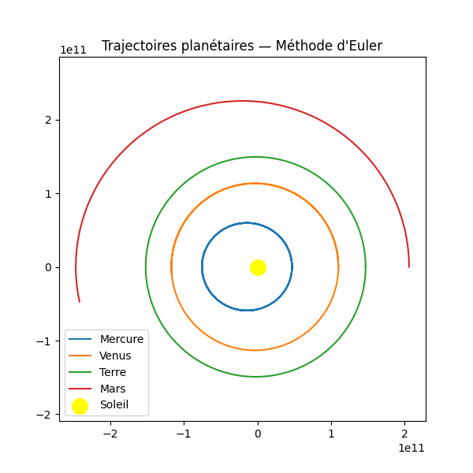
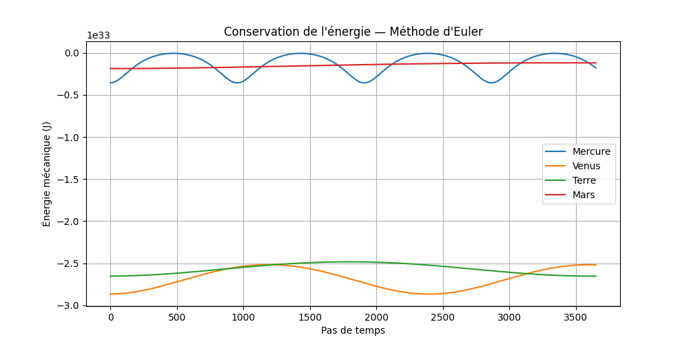

# Planétarium — Trajectoires du système solaire
Modélisation par méthodes d'Euler — ISEN A1
---
## Introduction
Dans ce projet, vous allez modéliser les trajectoires des planètes du système solaire. Pour cela, vous résoudrez numériquement des **équations différentielles du second ordre** issues de la mécanique newtonienne, à l'aide des méthodes d'Euler classique et d'Euler asymétrique.
> Ce projet prolonge directement le TP d'introduction à la méthode d'Euler. Assurez-vous d'avoir bien compris la formule $y_{n+1} = y_n + h \cdot F(y_n, t_n)$ avant de commencer.
---
## 1. Rappels de physique
### Principe fondamental de la dynamique
Dans un référentiel galiléen (ici héliocentrique), la somme des forces exercées sur un corps de masse $m$ est égale à $m \cdot \vec{a}$ :
$$\sum_i \vec{F_i} = m \cdot \vec{a}$$
### Loi de gravitation universelle (Newton)
Deux corps de masses $m_A$ et $m_B$ séparés d'une distance $r$ s'attirent avec une force :
$F_{A/B} = \frac{G \cdot m_A \cdot m_B}{r^2}$ avec $G = 6{,}674 \times 10^{-11} \text{N} \cdot \text{kg}^{-2}\cdot\text{ m}^2$.
Sous forme vectorielle, en introduisant $\vec{r} = \overrightarrow{BA}$ :
$$\vec{F}_{A/B} = \frac{G \cdot m_A \cdot m_B}{||\vec{r}||^3} \cdot \vec{r}$$
> Le dénominateur est en $r^3$ (et non $r^2$) car on a multiplié par $r$ pour faire apparaître le vecteur $\vec{r}$ au numérateur.
### Équation différentielle du mouvement
En combinant les deux lois et en simplifiant par $m_A$, l'accélération d'une planète soumise uniquement à l'attraction du Soleil vaut :
$$\boxed{\vec{a} = -\frac{G \cdot m_S}{||\vec{r}||^3} \cdot \vec{r}}$$
C'est une **équation différentielle du second ordre** en $\vec{r}(t)$, car $\vec{a} = \dfrac{d^2\vec{r}}{dt^2}$.
---
## 2. Méthode d'Euler classique
### Principe
On décompose l'équation du second ordre en deux équations du premier ordre :
$$\begin{cases} \dfrac{d\vec{r}}{dt} = \vec{v} \qquad \text{et} \qquad \dfrac{d\vec{v}}{dt} = \vec{a} = -\dfrac{G \cdot m_S}{||\vec{r}||^3} \cdot \vec{r} \end{cases}$$
À chaque pas de temps $\Delta t$, on applique la formule d'Euler sur chaque composante. L'ordre de calcul est le suivant :
1. Calculer l'accélération $\vec{a}_n$ à partir de la **position actuelle** $\vec{r}_n$
2. Calculer la nouvelle position : $\vec{r}_{n+1} = \vec{r}_n + \vec{v}_n \cdot \Delta t$
3. Calculer la nouvelle vitesse : $\vec{v}_{n+1} = \vec{v}_n + \vec{a}_n \cdot \Delta t$
La méthode d'Euler classique est instable pour ce problème : la trajectoire diverge progressivement. Vous l'observerez dans vos graphiques.
---
## 3. Méthode d'Euler asymétrique
### Différence avec la méthode classique
L'ordre des étapes est **inversé** : on calcule d'abord la nouvelle position, puis l'accélération à cette nouvelle position, puis la nouvelle vitesse.
1. Calculer la nouvelle position : $\vec{r}_{n+1} = \vec{r}_n + \vec{v}_n \cdot \Delta t$
2. Calculer l'accélération $\vec{a}\_\{n+1}$ avec $\vec{r}\_\{n+1\}$
3. Calculer la nouvelle vitesse : $\vec{v}\_\{n+1} = \vec{v}_n + \vec{a}\_\{n+1} \cdot \Delta t$
### Comparaison des deux méthodes
| | Euler classique | Euler asymétrique |
|---|---|---|
| Accélération calculée à | $\vec{r}_n$ | $\vec{r}_{n+1}$ |
| Stabilité | ✗ Diverge | ✓ Stable |
| Complexité | Identique | Identique |
> Cette petite modification suffit à rendre la méthode **symplectique**, ce qui conserve mieux l'énergie du système.
---
## 4. Données des planètes
Les planètes sont initialisées à leur **périhélie** (point le plus proche du Soleil), avec leur vitesse correspondante calculée à partir des paramètres orbitaux.
| Planète | Masse (kg) | Périhélie (m) | Excentricité | Demi-axe (m) |
|---|---|---|---|---|
| Mercure | $3{,}3 \times 10^{23}$ | $4{,}7 \times 10^{10}$ | $0{,}2056$ | $5{,}79 \times 10^{10}$ |
| Vénus | $4{,}9 \times 10^{24}$ | $1{,}1 \times 10^{11}$ | $0{,}0068$ | $1{,}08 \times 10^{11}$ |
| Terre | $5{,}97 \times 10^{24}$ | $1{,}47 \times 10^{11}$ | $0{,}0167$ | $1{,}496 \times 10^{11}$ |
| Mars | $6{,}42 \times 10^{23}$ | $2{,}06 \times 10^{11}$ | $0{,}0934$ | $2{,}28 \times 10^{11}$ |
- Le **périhélie** est le point de l’orbite d’une planète où elle est la **plus proche du Soleil**.
- L’**excentricité** mesure à quel point une orbite est **elliptique** (entre 0 et 1 : plus $e$ est grand, plus l’ellipse est allongée.
- Le **demi-grand axe** est la moitié du plus grand diamètre de l’ellipse orbitale.
### Calcul de la vitesse à la périhélie
À la périhélie, la vitesse est perpendiculaire au rayon. Sa norme se calcule par :
$$v_{perihelie} = \sqrt{\frac{G \cdot M_S \cdot (1 + e)}{a \cdot (1 - e)}}$$
où $e$ est l'excentricité et $a$ le demi-grand axe.
```python
def calcul_vitesse_perihelie(planete: dict) -> float:
e = planete["excentricite"]
a = planete["demi-axe"]
v = math.sqrt((G * soleil_masse * (1 + e)) / (a * (1 - e)))
planete["vitesse-perihelie"] = v
return v
```
---
## 5. Travail demandé
### Étape 1 — Structure de données
- Stocker les données de chaque planète dans votre code python, de la manière la plus adaptée et simple d'utilisation.
### Étape 2 — Vitesse à la périhélie
- Implémenter `calcul_vitesse_perihelie(planete)` et vérifier la valeur obtenue pour la Terre (~29 800 m/s).
### Étape 3 — Méthode d'Euler classique
- Implémenter `methode_euler(perihelie, vitesse)` et afficher la trajectoire de la Terre. Vérifiez que la période est proche de 365 jours.
### Étape 4 — Méthode d'Euler asymétrique
- Implémenter `methode_euler_asymetrique(perihelie, vitesse)` et comparer les deux trajectoires sur un même graphique. Observez la stabilité.
### Étape 5 — Affichage matplotlib
Afficher les 4 planètes (Mercure, Vénus, Terre, Mars) avec des couleurs différentes. Placer le Soleil au centre.
```python
import matplotlib.pyplot as plt
fig, ax = plt.subplots()
ax.set_aspect('equal')
# Soleil
soleil = plt.Circle((0, 0), 1e10, color='yellow')
ax.add_patch(soleil)
# calculer et ajouter les X et Y
plt.legend()
plt.title("Système solaire — Euler asymétrique")
plt.show()
```
### Étape 6 — Conservation de l'énergie
Calculez à chaque pas l'énergie potentielle et cinétique du système Terre-Soleil :
$$E_p = -\frac{G \cdot m_T \cdot m_S}{||\vec{r}||} \qquad E_c = \frac{1}{2} m_T ||\vec{v}||^2$$
$$E_{totale} = E_p + E_c$$
Tracez $E_{totale}$ en fonction du temps. Elle doit rester **constante** pour une méthode stable.
Comparez la conservation de l'énergie entre Euler classique et Euler asymétrique : vous devriez observer une dérive croissante avec la méthode classique.
---
## 6. Extension — Animation (bonus)
Voir
documentation
## 7. Ajouter des méthodes d'estimations complémentaires
Voir
ici.
---
## Exemples d'affichages


---
# Bon courage !